Historical and reference coats of arms


Vologda
Guide. Places in this edition: 31.
OTIUM is the practice of deliberate leisure. In the classical sense, otium is not escape from work but time when attention returns to memory, landscape, and thought — without a utilitarian deadline.
We shape routes for lingering, not for checklist tourism. The goal is presence in a place rather than consumption of sights.
OTIUM is not a tour operator. It is an invitation to walk, pause, and leave a route unfinished if the light on a façade deserves another minute.
Historical and reference coats of arms
Guide. Places in this edition: 31.
Vologda is a regional centre of Russia’s north, known for wooden lace architecture and Orthodox heritage.
Trade routes to the White Sea, stone building in the sixteenth and seventeenth centuries, and ties to church reformers shaped its character. Kremlin walls, carved houses, and literary traditions sustain an image of the “Russian North.”
Imperial and Soviet periods preserved wooden carving and rail links; the Great Patriotic War touched the region. Vologda now cultivates Golden Ring tourism and northern folk heritage.
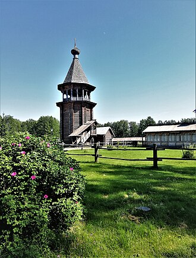
The Architectural and Ethnographic Museum in Vologda offers visitors a captivating glimpse into the region's rich architectural heritage and traditional way of life. Set in a picturesque landscape, the museum features a collection of wooden structures, including churches and peasant houses, showcasing the unique styles of Russian architecture. Visitors can explore the exhibits that highlight the cultural practices and everyday life of the local population. Established in 1960. Features a collection of over 30 historical wooden structures. Showcases traditional Russian architecture and rural life.
The Architectural and Ethnographic Museum was established in 1960, with the aim of preserving and showcasing the architectural heritage of the Vologda region. Over the years, the museum has expanded its collection, bringing together various historical buildings that represent the traditional Russian lifestyle and architecture. Culturally, the museum plays a vital role in preserving the heritage of the Vologda region, reflecting the architectural styles and traditions of rural life. It serves as an educational resource, promoting awareness of local customs and practices. The museum also contributes to the cultural tourism of Vologda, attracting visitors interested in the region's history and traditions.

The Artists Union Gallery in Vologda is a vibrant hub for contemporary art, showcasing a diverse range of works from local and regional artists. Visitors can explore various exhibitions that reflect the rich cultural tapestry of the area, making it an essential stop for art enthusiasts and those interested in the creative pulse of the city. The gallery is part of the Russian Artists Union, which supports artists across the country. It hosts regular exhibitions, workshops, and cultural events that engage the local community.
The Artists Union Gallery was established in the late 20th century as a part of the broader movement to promote contemporary art in Russia. It has since become a key venue for exhibitions, fostering a community of artists and art lovers in Vologda. Culturally, the gallery plays a vital role in preserving and promoting the artistic heritage of Vologda. It serves as a platform for artists to express their creativity and engage with the public, contributing to the city's cultural landscape and enhancing its reputation as a center for the arts.

Former Sobornaya Square inside the kremlin, framed by cathedral architecture and open paving. Central to guided tours of the kremlin. Respect roped areas and service schedules.

The Church of St John the Baptist in Vologda is a stunning example of Russian Orthodox architecture, known for its intricate frescoes and serene atmosphere. Nestled in the heart of the city, this church attracts both worshippers and visitors alike, offering a glimpse into the region's rich spiritual heritage. Its peaceful surroundings make it a perfect spot for reflection and appreciation of Vologda's historical landscape. Founded in 1694, replacing an earlier wooden church. Features intricate frescoes and traditional Russian architectural elements. Serves as an active place of worship and a cultural landmark in Vologda.
The Church of St John the Baptist was founded in the late 17th century, with construction completed in 1694. It was built on the site of an earlier wooden church, reflecting the growing importance of the Orthodox faith in the region during this period. The church has undergone various restorations over the years, preserving its architectural integrity and artistic treasures. Culturally, the Church of St John the Baptist serves as a vital symbol of Vologda's religious heritage and community life. It is a site for traditional Orthodox rites and celebrations, contributing to the local identity and continuity of faith practices. The church's artistic elements, including its frescoes, represent significant contributions to the region's cultural landscape.
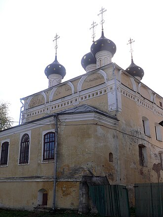
The Dmitry Prilutsky Church, located in Vologda, is a striking example of Russian architecture, known for its unique design and historical significance. This church, dedicated to Saint Dmitry, attracts visitors with its beautiful frescoes and serene atmosphere, making it a peaceful spot for reflection and admiration of its artistry. Founded in the late 16th century. Construction completed in 1628. Dedicated to Saint Dmitry.
The Dmitry Prilutsky Church was founded in the late 16th century, with its construction completed in 1628. It was built in honor of Saint Dmitry, a revered figure in Russian Orthodoxy, and has undergone various restorations over the centuries to preserve its architectural integrity. Culturally, the church is an important part of Vologda's heritage, showcasing the artistic styles of its time through its intricate frescoes and unique architectural elements. It serves as a vital link to the region's religious traditions and daily life, reflecting the community's devotion and historical continuity.

The Dmitry Prilutsky Church in Vologda is a striking example of Russian architecture, renowned for its intricate design and historical significance. This church, dedicated to St. Dmitry of Priluki, serves as a peaceful place for reflection and worship, attracting both locals and visitors alike. Its serene atmosphere and beautiful surroundings make it a must-visit site for those exploring Vologda's rich cultural heritage. Completed in 1610. Dedicated to St.
The Dmitry Prilutsky Church was founded in the late 16th century, with its construction being completed in 1610. It is named after St. Dmitry of Priluki, a revered figure in Russian Orthodoxy, and has played a role in the spiritual life of the region for centuries. The church has undergone various restorations over the years, preserving its architectural integrity and historical value. Culturally, the church is an important part of Vologda's heritage, showcasing traditional Russian architectural styles and serving as a venue for local religious practices. It reflects the deep-rooted traditions of the Orthodox faith in the region and continues to be a center for community gatherings and spiritual events.

The House of Peter I in Vologda is a unique museum dedicated to the early years of Peter the Great, showcasing his life and the historical context of his reign. This charming wooden house, built in the late 17th century, offers visitors a glimpse into the personal life of one of Russia's most influential tsars. Exhibits include artifacts, documents, and displays that highlight Peter's innovative spirit and his role in shaping modern Russia. The House of Peter I was built in 1702. It served as a residence for Peter the Great during his travels to Vologda. The museum was established in 1940.
The House of Peter I was constructed in 1702 and served as a residence for the young tsar during his travels to the north. It is in this house that Peter the Great is said to have formulated plans for the development of the Russian Navy and the modernization of the country. The house has been preserved as a museum since 1940, reflecting the significance of Vologda in Peter's early life. Culturally, the House of Peter I is an important heritage site that reflects the early modernization efforts of Russia under Peter the Great. It serves as a reminder of the tsar's influence on Russian culture and governance, marking a pivotal shift in the nation's history. The museum plays a crucial role in educating visitors about the traditions and innovations of the era, contributing to the broader understanding of Russian heritage.
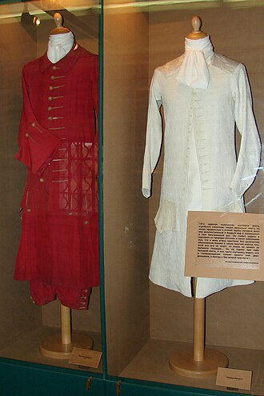
The House of Peter I in Vologda is a captivating museum that showcases the early life of Peter the Great, one of Russia's most influential rulers. This wooden house, built in the late 17th century, offers visitors a glimpse into the personal history and formative experiences of Peter during his time in Vologda. The museum features period furnishings and exhibits that reflect the era's culture and Peter's ambitions for modernization. The house was built in 1702. It became a museum in 1940. The museum features exhibits related to Peter the Great's life and the cultural context of the early 18th century.
The House of Peter I was constructed in 1702, serving as a residence for the young Peter the Great during his travels. It is notable for being one of the few surviving wooden structures from that time, representing the architectural style of the period. The house became a museum in 1940, dedicated to preserving the legacy of Peter and his impact on Russian history. Culturally, the House of Peter I is significant as it highlights the early influences that shaped Peter the Great's vision for a modern Russia. The museum not only preserves the heritage of the era but also reflects the broader historical narrative of Russian modernization and the cultural shifts that accompanied it. It serves as a reminder of the traditions and daily life of the time, contributing to the understanding of Russian history.

Courtyard perspective of domes and walls showing the density of the kremlin churches. Useful reference for how routes circulate inside the walls. Museum tickets may bundle several buildings.
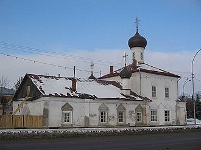
The Kazan Church in Vologda is a striking example of Russian architecture, known for its distinctive onion-shaped domes and intricate frescoes. This historic church serves as a serene place of worship and a testament to the city's rich cultural heritage. Visitors can admire its beautiful interior and learn about its significance in the local community. Founded in the early 17th century. Construction completed in 1694. Dedicated to the Kazan Icon of the Mother of God.
The Kazan Church was founded in the early 17th century, with its construction completed in 1694. It was built in honor of the Kazan Icon of the Mother of God, which holds great significance in Russian Orthodoxy. Over the years, the church has witnessed various historical events, including the changes brought about by the Russian Revolution. Culturally, the Kazan Church is an important landmark in Vologda, reflecting the city's architectural evolution and religious traditions. It plays a vital role in the daily lives of local residents, serving not only as a place of worship but also as a venue for community gatherings and cultural events. The church's artistic elements contribute to Vologda's heritage, making it a site of interest for both locals and tourists.

Open square beside the kremlin used for events and as the main approach to the ensemble. Good orientation point before entering museum buildings. Ice and snow in winter require care on paving.

Allow time for temporary exhibitions. Gift shop may offer certified lace products.
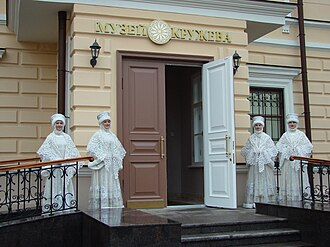
The Museum of Lace in Vologda is a captivating destination that showcases the intricate art of lace-making, a traditional craft that has flourished in the region for centuries. Visitors can explore a rich collection of lace artifacts, learn about the techniques involved in this delicate art, and even participate in workshops. The museum not only highlights the beauty of lace but also serves as a cultural hub for preserving and promoting this unique heritage. The museum was founded in 1991. Vologda lace-making traditions date back to the 16th century. The museum features a collection of over 1,500 lace items.
The Museum of Lace was established in 1991, reflecting Vologda's long-standing tradition of lace-making, which dates back to the 16th century. The museum's founding aimed to preserve and promote the local craftsmanship that has been an integral part of the region's identity. Culturally, the Museum of Lace plays a crucial role in preserving the heritage of Vologda, showcasing the artistry and skill of local lace-makers. It serves as a vital link to the region's past, celebrating traditions that have been passed down through generations. The museum's focus on lace-making not only highlights a unique aspect of Russian folk art but also contributes to the broader narrative of cultural preservation in the face of modernization.
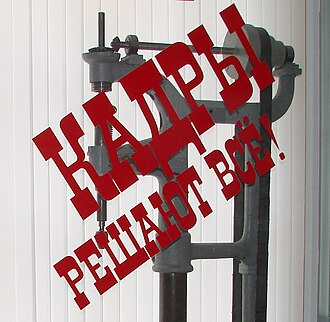
The Vologda Regional Museum is a treasure trove of local history and culture, showcasing the rich heritage of the Vologda region. Visitors can explore diverse exhibitions that highlight the area's art, traditions, and historical artifacts. The museum serves as a focal point for understanding Vologda's past and its cultural evolution. Founded in 1912, the museum has evolved to encompass various aspects of Vologda's history and culture. The museum features exhibitions on local art, ethnography, and natural history.
The Vologda Regional Museum was founded in 1912, initially focusing on the natural history and ethnography of the region. Over the years, it has expanded its collections and exhibitions, reflecting the historical and cultural development of Vologda and its surroundings. Culturally, the museum plays a vital role in preserving and promoting the unique heritage of Vologda, including its traditional crafts, folk art, and local customs. It serves as a center for educational programs and cultural events, fostering a deeper appreciation for the region's history among both locals and visitors.

Cathedral of the Resurrection — Wikimedia disambiguation page. Check whether tower climbs are offered seasonally. Combine with neighbouring kremlin museums.
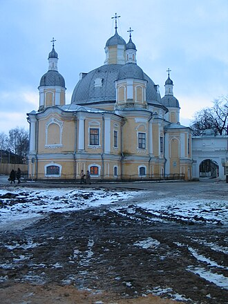
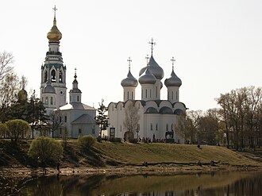
Saint Sophia Cathedral — Wikimedia disambiguation page.

Landmark cathedral domes seen from the Vologda River, defining the city's northern skyline. River walks link several churches and embankments. Early light can be excellent for photography.

Saint Sophia Cathedral in Vologda is a stunning example of Russian architecture, renowned for its intricate design and historical importance. Built in the 16th century, this cathedral serves as a prominent landmark in the city, attracting visitors with its beautiful frescoes and rich heritage. It stands as a testament to Vologda's role in the development of Russian culture and spirituality. Constructed between 1568 and 1570. Designed by architect Pyotr Baranov. Features a combination of Byzantine and local architectural styles.
Saint Sophia Cathedral was constructed between 1568 and 1570 under the reign of Tsar Ivan the Terrible. It was designed by the architect Pyotr Baranov and is one of the earliest examples of the Russian architectural style that combines Byzantine and local traditions. The cathedral has undergone various restorations and has played a significant role in the religious life of the region over the centuries. The cathedral holds great cultural significance as a symbol of Vologda's historical and religious heritage. It is not only a place of worship but also a site that reflects the artistic achievements of the time, with its stunning frescoes and unique architectural features. The cathedral contributes to the local identity and is a focal point for various religious ceremonies and cultural events.
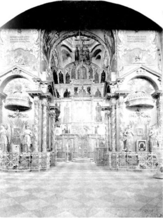
The Spaso-Preobrazhensky Church in Vologda is a stunning example of Russian architecture, known for its intricate design and historical importance. This church serves as a significant landmark in the city, attracting visitors with its rich heritage and serene atmosphere. It offers a glimpse into the spiritual life of the region and the artistry of its time. Founded in the early 16th century, with construction completed in 1560. Known for its unique architectural style and intricate frescoes.
The Spaso-Preobrazhensky Church was founded in the early 16th century, with its construction believed to have been completed in 1560. It has undergone various restorations over the centuries, reflecting the architectural styles and religious practices of different eras. The church has played a pivotal role in the religious life of Vologda, serving the local community for over 450 years. Culturally, the Spaso-Preobrazhensky Church is an essential part of Vologda's heritage, showcasing the artistry of Russian Orthodox architecture. It is a site of local traditions and rituals, contributing to the daily life of the community. The church's historical and architectural value makes it a significant landmark in the city, often drawing attention from both locals and tourists alike.

Major monastery complex north of the centre, with fortified walls and church buildings. Requires transport or a longer walk from the kremlin. Confirm opening hours; some areas may close seasonally.
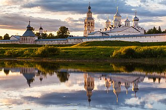
The Spaso-Prilutsky Monastery is a significant spiritual center and historical landmark located on the banks of Lake Beloye in Vologda. Established by Archimandrite Prilutsky in the late 14th century, it has been a place of worship and retreat for centuries. It was founded by Archimandrite Prilutsky in 1398. Located on the shores of beautiful Lake Beloye, offering panoramic views. Contains numerous historic structures dating back to the 17th and 18th centuries. Notable for its peaceful atmosphere and natural beauty. Offers guided tours and services for religious observances.
Founded around 1398 by Archimandrite Prilutsky, the monastery grew into one of Russia's most important Orthodox sites. It served as a refuge for monks seeking solitude and contemplation amidst its serene surroundings. The complex includes several churches and monastic buildings, each reflecting distinct architectural styles from different periods. Visitors come to admire the monastery’s tranquility, historic significance, and stunning architecture.
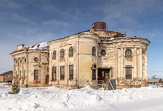
St. John Church in Vologda is a striking example of Russian Orthodox architecture, known for its elegant design and serene atmosphere. Visitors can admire its intricate frescoes and the beautiful iconostasis, which reflect the rich artistic heritage of the region. The church serves as a peaceful retreat for both locals and tourists seeking to connect with the spiritual history of Vologda. Founded in the early 17th century, completed in 1650. Features intricate frescoes and a beautiful iconostasis.
St. John Church was founded in the early 17th century, with its construction completed in 1650. It was built during a period of significant growth for Vologda, as the city became an important center for trade and culture. The church has witnessed various historical events, including the changes in religious practices and the impact of political shifts in Russia over the centuries. Culturally, St. John Church is a vital part of Vologda's heritage, showcasing the artistry of the time through its frescoes and architectural style. It plays a role in the daily life of the community, hosting religious services and cultural events that reinforce local traditions. The church is also a testament to the enduring nature of Orthodox faith in the region, attracting pilgrims and visitors alike.

Fortified bishop's court with cathedral bell towers and kremlin walls at the historic core of Vologda. Allow time for museum and church opening hours. The ensemble is a focal point for walking the old centre.
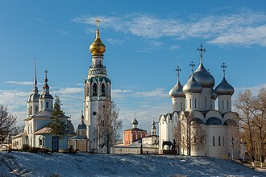
The Vologda Kremlin is a historic fortress located in the heart of Vologda, showcasing a blend of architectural styles from different eras. Visitors can explore its impressive walls, towers, and churches, which offer a glimpse into the city's rich past. The Kremlin serves as a cultural hub, hosting various events and exhibitions throughout the year. The Kremlin was built between the late 15th and early 16th centuries. It features the Cathedral of St. The fortress walls and towers are a prominent example of Russian defensive architecture.
The Vologda Kremlin was founded in the late 15th century, with its construction initiated under the reign of Ivan III. It played a crucial role in the defense of the region and was a center of political power during the time of the Grand Duchy of Moscow. Key events include its transformation into a significant administrative and religious center in the 16th century. Culturally, the Vologda Kremlin is a symbol of the city's heritage, reflecting its historical importance and architectural evolution. It houses several notable churches and museums, contributing to the local identity and daily life of Vologda's residents. The Kremlin is also part of the cultural landscape of Russia, attracting tourists and scholars interested in the region's history.

Combine with St Sophia Cathedral and the regional museum nearby. Crowds peak in summer travel months.
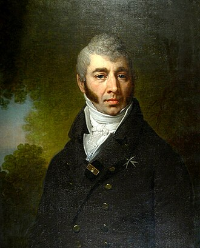
The Vologda Regional Art Gallery is a prominent cultural institution located in the heart of Vologda. It houses an impressive collection of Russian art, including works from the 18th century to contemporary pieces. Visitors can explore various exhibitions that showcase the rich artistic heritage of the region and beyond. Founded in 1963, the gallery has a collection that spans several centuries. The gallery features works from notable Russian artists and hosts temporary exhibitions.
The Vologda Regional Art Gallery was founded in 1963, evolving from earlier collections that began to take shape in the 1930s. It has since become a key player in the promotion and preservation of regional art, reflecting the artistic developments in Vologda and the surrounding areas. Culturally, the gallery plays a vital role in the artistic life of Vologda, serving as a platform for local artists and fostering appreciation for both historical and contemporary art. It contributes to the city's cultural identity and heritage, making it an essential destination for art enthusiasts and tourists alike.
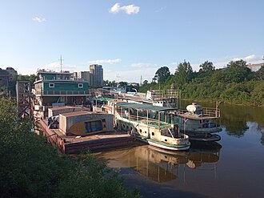
The Vologda River flows through the heart of Vologda, a picturesque city known for its historical charm and cultural heritage. It meanders gently past ancient churches, cozy cafes, and charming parks, offering visitors a serene escape amidst bustling urban life. It is approximately 480 kilometers long, flowing through the vast landscapes of northwestern Russia. Its shores are lined with numerous small islands, each with its own unique character and charm. In summer, the river becomes a popular spot for boating, fishing, and picnicking. Historical bridges spanning the river provide pedestrian access and offer panoramic views of the surrounding area. Local folklore tells tales of mystical creatures said to inhabit its depths.
Originating deep within the forests of northern Russia, the Vologda River has been an integral part of Vologda's development since time immemorial. Throughout history, it served as a vital transportation route, connecting remote villages with the wider world. Today, it remains a symbol of the region’s natural beauty and cultural identity. Visitors come to the Vologda River to experience its tranquil waters, enjoy scenic walks along its banks, and immerse themselves in the local culture and traditions.

Pleasant for an evening stroll in warmer months. Links the kremlin area to residential quarters upstream.
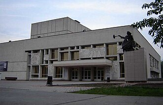
The Vologda State Museum is a prominent cultural institution located in the heart of Vologda, showcasing the rich history and artistic heritage of the region. Visitors can explore a diverse collection of exhibits, including traditional crafts, fine arts, and historical artifacts that reflect the area's unique identity. The museum also hosts various cultural events and educational programs, making it a vibrant hub for both locals and tourists. Founded in 1919, the museum has a rich collection of regional artifacts. The museum features exhibits on traditional crafts, fine arts, and local history.
The Vologda State Museum was founded in 1919, evolving from earlier collections that date back to the 18th century. It has played a crucial role in preserving the cultural heritage of the Vologda region, especially during significant historical events such as the Soviet era, when many cultural institutions faced challenges. Culturally, the museum is vital for understanding the artistic traditions and historical narratives of Vologda, contributing to the preservation of local heritage. It houses a significant collection of Russian art and crafts, reflecting the region's contributions to national culture. The museum also engages with the community through exhibitions and educational programs, reinforcing its role in daily life and cultural identity.
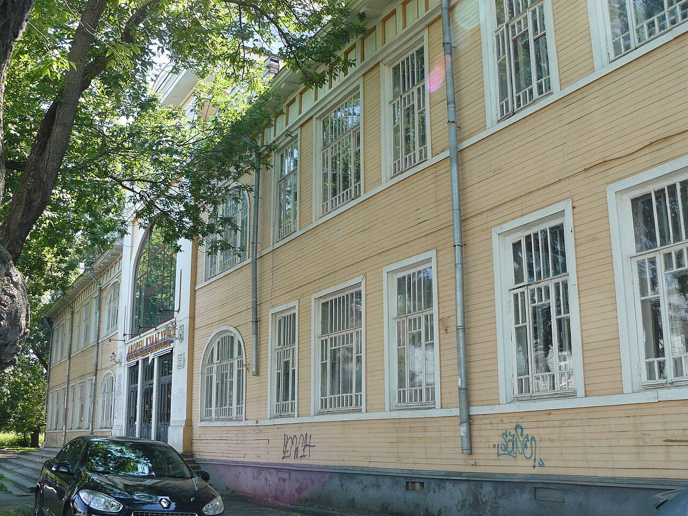